阅读规则：这些是 fan design，不是官方设定。每个 note 里的
[CANON] 才是原文可考特征，[INFERRED] 是为补全解剖加的设计选择。不要拿电影/动画/游戏/同人图当参考。水中监视者 Watcher in the Water
21 条触手成立；六视图最弱。

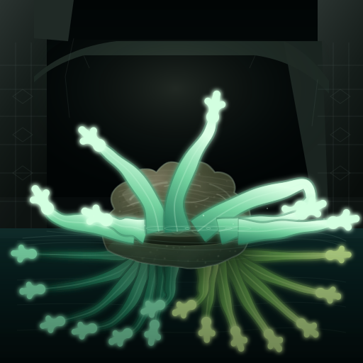

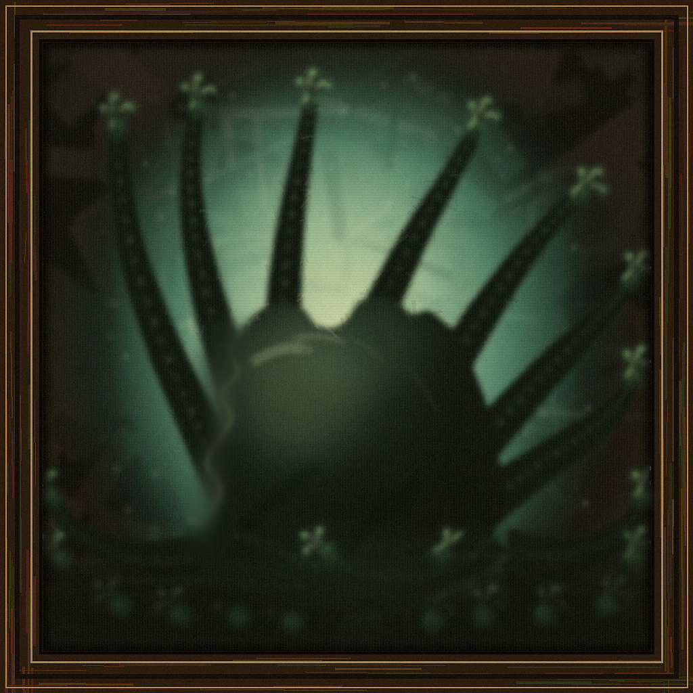

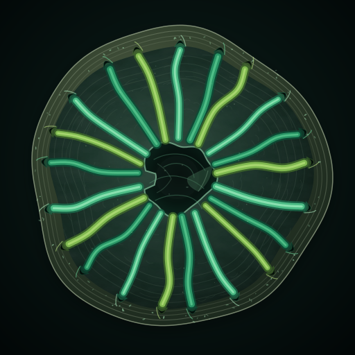

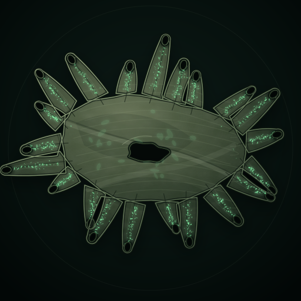

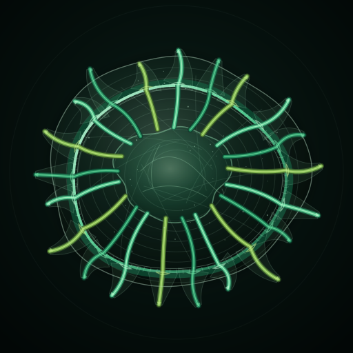


三头蛇 Runespoor
概念最好；皮张明确写成 headless。

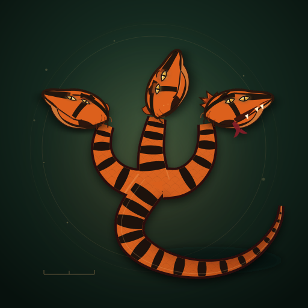

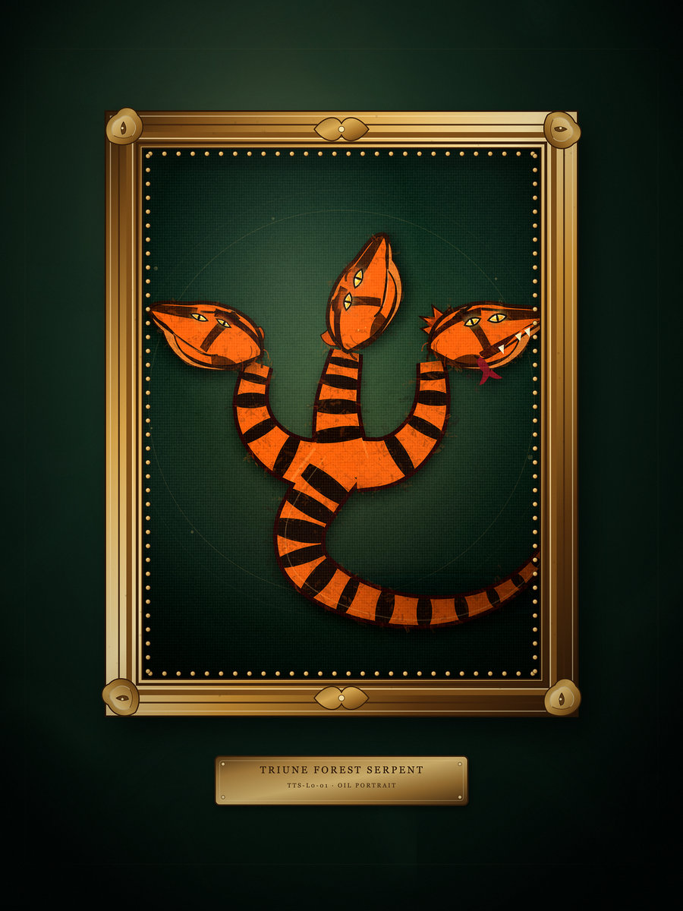

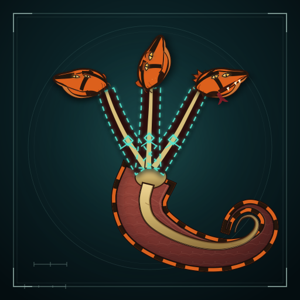

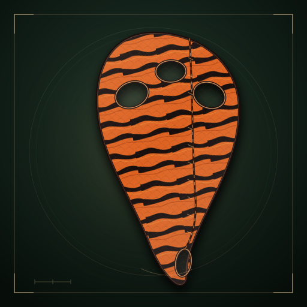

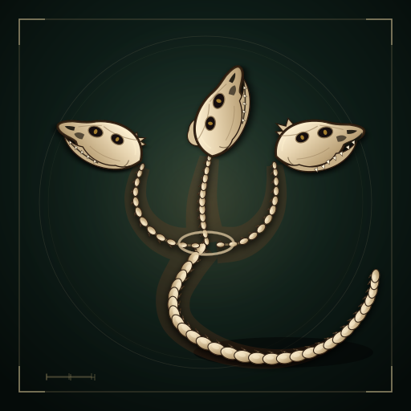


羽蛇 Feathered Serpent
最好看；皮张是一张无头披风。

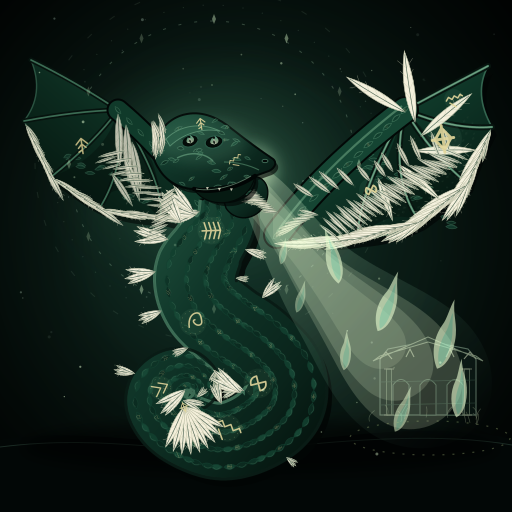

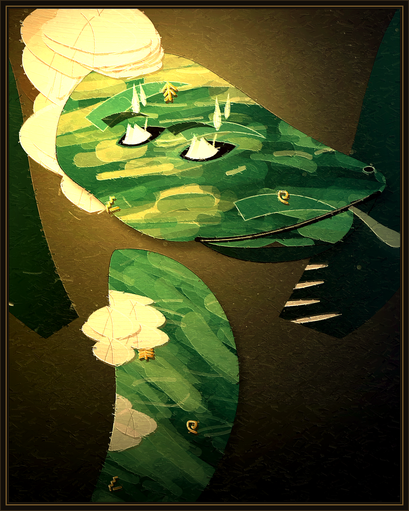

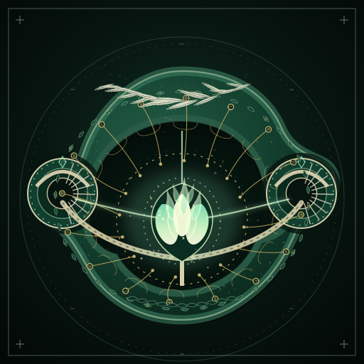

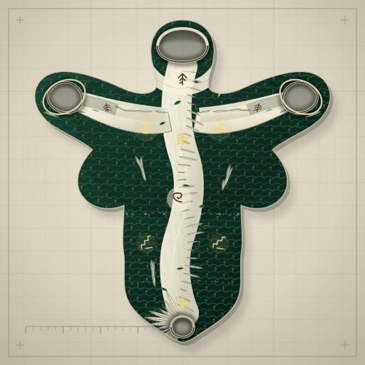

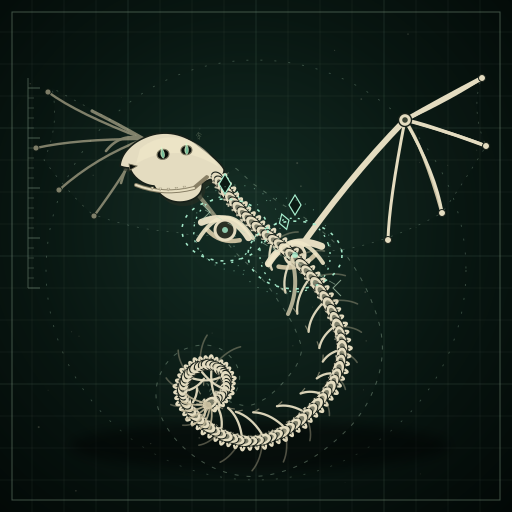



黑太岁 Black Tai Sui
最掉 san；信息量最少；无头是正确的。


水猴子 Water Monkey
唯一皮张真正通过：头/颈/4 肢都在。


提示词
三只文学生物 D2 提示词（水中监视者 / Runespoor / 羽蛇）